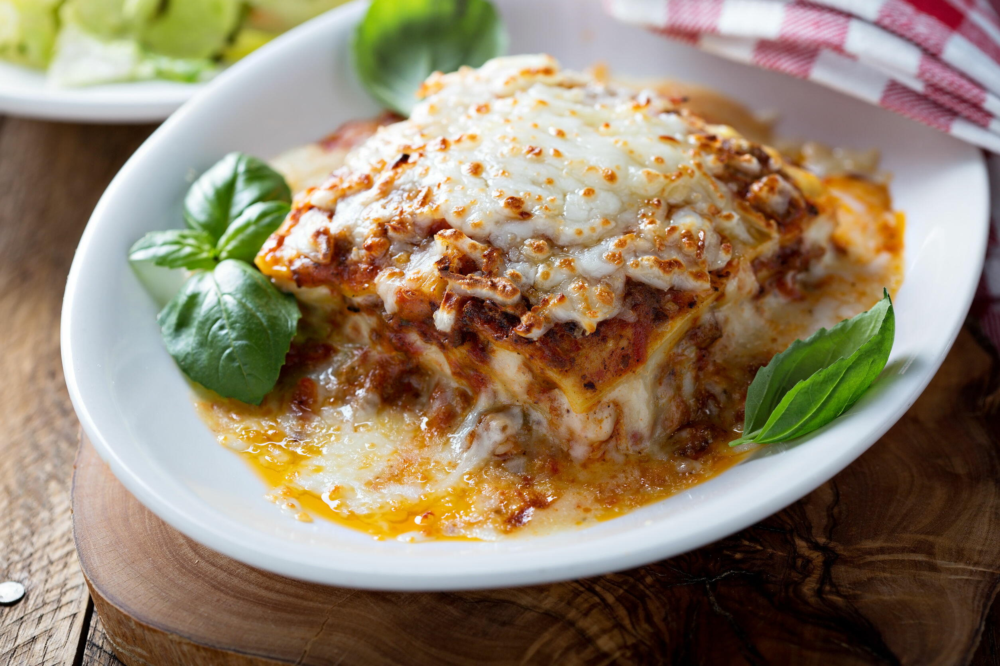

Lasagna

Ingredients:
- Sweet Italian Sausage
- Onion
- Garlic
- Can of Crushed Tomato
- Two Cans of Tomato Sauce
- Two Cans of Tomato Paste
- Fresh Parsley
- Dried Basil
- Salt
- Italian Seasoning
- Fennel Seeds
- Black Pepper
- Lasagna Noodles
- Parmesan
- Mozzarella
- Ricotta
- Egg
Directions
- Make the meat sauce
- Cook the noodles
- Make the ricotta mixture
- Layer the lasagna in the following order:
- Meat sauce
- Noodles
- Ricotta mixture
- Mozzarella
- Meat sauce
- Parmesan
- Repeat the layers, then top with the remaining Parmesan
- Cover with foil and bake for 25 minutes at 375F
- After 25 minutes bake uncovered for 25 more minutes at 375F
- Let lasagna rest for 15 minutes